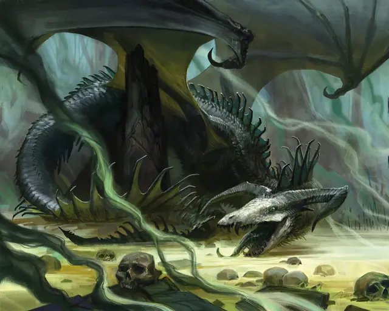

Вирмлинг чёрного дракона
Black Dragon Wyrmling
Средний Дракон (Цветной), Хаотичный Злой

Класс Защиты 17 Инициатива +4 (14)
Хиты 33 (6к8 + 6)
Скорость 30 футов, Плавания 30 футов, Полёта 60 футов
| мод | спас | ||
|---|---|---|---|
| СИЛ | 15 | +2 | +2 |
| ЛОВ | 14 | +2 | +4 |
| ТЕЛ | 13 | +1 | +1 |
| мод | спас | ||
|---|---|---|---|
| ИНТ | 10 | +0 | +0 |
| МДР | 11 | +0 | +2 |
| ХАР | 13 | +1 | +1 |
Иммунитеты Кислота
Чувства Тёмное зрение 60 футов, пассивное Восприятие 14, Слепое зрение 10 футов
Языки Драконий
Опасность 2 (450 опыта; БВ +2)
Особенности
Амфибия. Вирмлинг чёрного дракона может дышать как воздухом, так и под водой.
Действия
Мультиатака. Дракон совершает две атаки Раздиранием.
Раздирание. Бросок рукопашной атаки: +4, досягаемость 5 фт. Попадание: 5 (1к6 + 2) Рубящего урона плюс 2 (1к4) урона Кислотой.
Кислотное дыхание (Перезарядка 5–6). Спасбросок Ловкости: Сл 11, каждое существо в Линии длиной 15 футов и шириной 5 футов. Провал: 22 (5к8) урона Кислотой. Успех: Только половина урона.
Бонус мастерства +2
Среда обитания Болота
Сокровища Реликварные
Чёрные драконы
Драконы разложения и отчаяния
Чёрные драконы упиваются страданием и разрухой. Пока прочие цветные драконы строят козни ради богатств и власти, эти драконы стремятся низвергнуть всё в их досягаемости и властвовать над тлеющими останками.
Чёрные драконы — ужасающие создания с изогнутыми рогами и сморщенными, иссохшими мордами, напоминающими черепа исчадий. Обычно они обитают в застойных топях, осыпающихся развалинах или местах, отравленных магической либо природной скверной. Их кислотное дыхание оставляет след на их владениях: стирает черты с древних статуй и наносит гноящиеся раны самой природе.
Чёрные драконы собирают в своих сокровищницах потускневшие символы былых надежд и реликвии павших империй. Чем более желанным было сокровище, тем выше ценит его чёрный дракон, — особенно если сам постарался над его утратой для всего мира.
Вирмлинги чёрных драконов таятся в топях и загрязнённых протоках, охотясь на добычу и более слабых созданий ради слуг. Подросшие вирмлинги со временем уходят искать личные владения, но и, едва вылупившись, они порой охотятся друг на друга, чтобы подчинить остальных из кладки, а кого не удалось — умертвить.